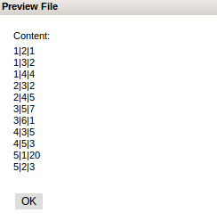

Information
Description
The information panel is useful as it contains different aspects of IDM such as the HDFS , Hive or Oozie , Errors and Help. Each tab displays information about a conmponent of IDM.
Process Manager
The Process Manager is a way to view the list of jobs that have been submited to Oozie . It is also possible to kill processes that are running. There is also a link to the Oozie Web Console that will show more details about the jobs submited to Oozie.

Error
The Errors tab will display all errors that have occured while operating within IDM. It displays the message and the time it occured at and which action caused the error
Hive View
Hive view displays all the tables in Hive. It gives a description of the columns and the variable type used for that column. It is important to know what the variable types are when building a workflow so that input and output for actions match up.

Hive View allows for previewing of certain tables

Hadoop File System
Hadoop File System will present the files that are on the HDFS. Browsing the file system can be done here which allows for viewing other directories and files as long as the right permissions are in place. The Content of the files can also be previewed by clicking on the file name.

return to IDM help